Your week, sorted
- Macros in your daily log (version 2.6)Protein, carbs and fat are counted for every entry of your daily log: plate photo, barcode, planned meal, food from the list, and manual entry, where you can type them if you wish. Next to today’s calories, the Daily journal shows today’s protein, carbs and fat, with each one’s share of the energy from the three. If an entry has no macronutrients, for example one added with an earlier version, the app says the totals are partial. These are estimates, not medical advice.
- Protein shake (version 2.6)Save your powder once, with the values per scoop copied from its label: scoop weight, energy, protein, carbs and fat. The app suggests no default values. Then add a shake from the Daily journal: choose the number of scoops, then water, semi-skimmed milk or unsweetened soy drink, and its volume. The shake counts in today’s calories and macros. The values of the milk and the soy drink are average values built into the app, and your products stay on your iPhone.
- A new look and a new icon (version 2.6)Lighter surfaces, cards and buttons in relief, clearer choices, and a new icon: a fox in a navy hat with its notepad. It is also easier to use: native recipe search, long-press menus on meals and recipes, swipe to check off groceries or delete a journal entry, short tasks in sheets and haptic feedback at key moments. Larger text sizes work on more screens, and Reduce Motion is respected everywhere. In Goals, clearer steps help you turn on step reading when no steps are found.
- Calories from a photo of your plate (version 2.5)Take a photo of your plate: the artificial intelligence built into your iPhone recognizes the foods and estimates quantities and calories, on the device. The photo is never saved or sent. Add the result to your daily log. 3 analyses are free; after that, plate photo analysis is part of Premium. It needs an iPhone compatible with built-in artificial intelligence, running iOS 27 or later, with that feature turned on; everything else works without it. The result is a rough estimate that can be far from your plate: oil, butter, cream and sauces are often invisible in a photo, so check every food and quantity and add what is missing.
- Your daily log (version 2.5)Keep track of what you eat each day and see the calorie total at a glance; from version 2.6, protein, carbs and fat too. Your log stays on your iPhone.
- Calorie calculator (version 2.5, free)In Goals, enter your age, the sex used in the formula, your height, your weight and how active you are, and see an estimate of your basal metabolic rate (the energy your body uses at rest) and of the calories to maintain your weight, per day and per week. It uses the Mifflin-St Jeor formula and the usual activity factors. These are estimates, not medical advice, and no number is shown if you say you are pregnant, breastfeeding, have an eating disorder or a medical condition. What you type is neither saved nor sent.
- New plans and a clearer offer screen (version 2.4)Choose a weekly plan (3-day free trial for eligible new subscribers), monthly, 3 months or yearly, the best value. Right after your free first week, the offer screen opens with a title based on your answers; close it with the cross to keep limited access. See all lists every Premium feature.
- Cook once, eat twice (version 2.3)Turn it on in your week’s preferences: each dinner becomes the next day’s lunch. The dinner card tells you how many servings to cook and reminds you to refrigerate tomorrow’s share.
- A shopping list for the whole household (version 2.3)Add your own items (dish soap, bread…), share the list sorted by aisle, or export it to a dedicated list in Apple’s Reminders app, which you can share with your household.
- Next week in one tap, and an optional weekly reminder (version 2.3)On the last day of your week, My week offers to plan the next one. You can turn on one local reminder a week, on the day and at the time you choose.
- A stricter Balanced diet (version 2.3)Balanced now keeps meals with at most 40% of their energy from fat and 250 to 850 kcal per serving (estimates); the former choice is called No restriction. Vary the cuisines serves a different collection at each meal, as far as possible.
- Set up from your needs (version 2.2)Tell Yonsi what matters to you: eating more balanced, saving time, more protein, cooking for the family, moving more or losing weight gently. A few questions, and your meals, diet, cooking time and goals are set up for you, with a short summary of the choices made. Change everything any time in Settings › My needs and goals.
- Cheers and gentle encouragement (version 2.2)A short message when you plan a week, finish your shopping list or reach your step goal, and a discreet card in Goals. In the app only, never as notifications.
- Lunches and dinners in one tapPlan 5 or 7 days, dinners only or lunches and dinners. Lock the meals you like, reshuffle the rest, or replace a single meal.
- One grocery list, sorted by aisleQuantities are added up for your servings and rounded to whole items. Deduct what is already in your pantry.
- More than 1,000 recipes in 10 collections (version 2.1)Classics, French, Chinese, Korean, Caribbean, African, easy 20-minute meals, light and protein-rich, and two new collections: Low calorie (under 400 kcal per serving, estimated) and Réunion Island. Every recipe shows estimated calories, protein, fat and carbs per serving.
- Your filters, respectedServings, a time limit, ten diets, excluded ingredients and allergens. The app never quietly loosens them.
- Goals (version 2.1, free)Log your weight, set a target and get an estimated daily calorie target with safeguards, then choose one of ten diets for your next meals. Estimates only, not medical advice.
- Steps from Apple Health (version 2.1, optional)Read-only: the app reads your step count to show it next to your goals. It never writes to Health and your steps never leave your iPhone. You can also enter steps by hand. From version 3.0, the “Your steps” card also estimates the calories burned by those steps, without adding them to your calorie goal.
- Barcode scan (version 2.1, Premium)Scan or type a barcode to see the nutrition facts for the whole product (from version 3.0, with values per 100 g or 100 ml as a reference) and, when available, its processing group, additives, allergens and ingredients, from the open Open Food Facts database, then check it off your grocery list or add it to your pantry. From version 3.0 it also reads QR codes that carry a product code and offers “To watch”, “Strengths”, “Alternatives” from the same category and “Rankings” by criterion. A scan sends only the barcode; a list sends a category and a country. From version 3.0, the scan is free for 3 days from your first scan without a subscription, then part of Premium; during those 3 days the scanner shows the time left, and Check off item and Add to pantry stay in Premium.
- 10 languages, metric or US unitsEnglish, French, Spanish, German, Italian, Portuguese (Brazil), Dutch, Japanese, Korean and Traditional Chinese.
- Yonsi PremiumAn auto-renewable subscription, weekly (with a 3-day free trial for eligible new subscribers), monthly, for 3 months or yearly, unlocks generating and changing weeks, every recipe, advanced filters, the pantry, the barcode scan (free for 3 days from your first scan, from version 3.0) and plate photo analysis beyond the 3 free ones. New installations (version 2.1 and later) may see a welcome offer for 48 hours, in Goals and, from version 2.3, at the top of the offer screen (see the Terms of Use). Without a subscription you can browse the recipe collections, keep reading your saved week and shopping list, use Goals, the calorie calculator and steps, try plate photo analysis 3 times and, from version 3.0, use the barcode scan for 3 days from your first scan.
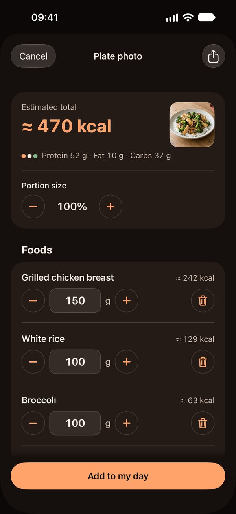
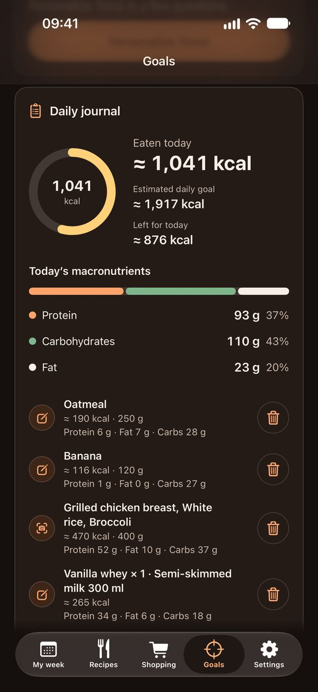
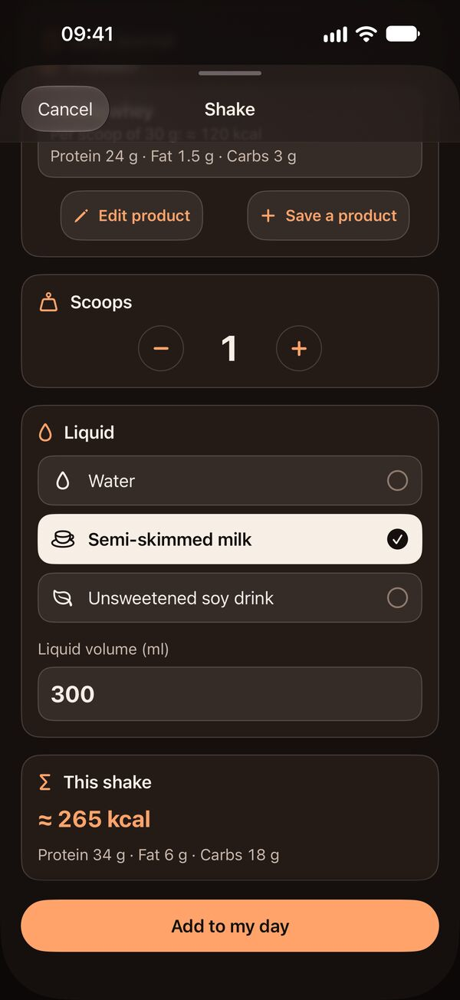
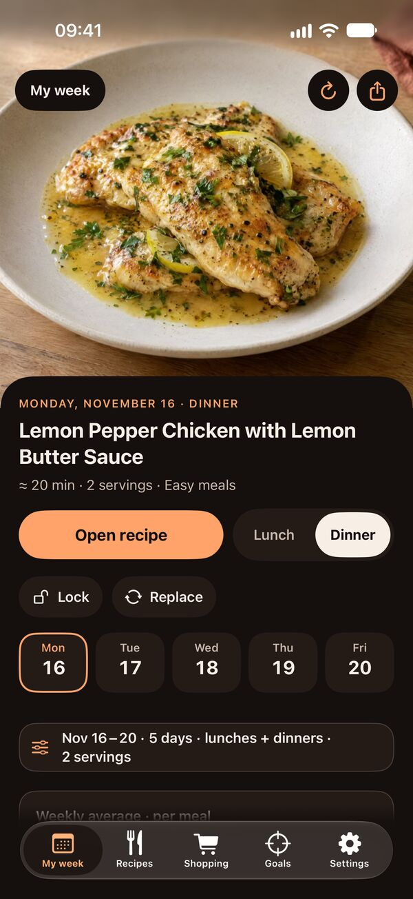
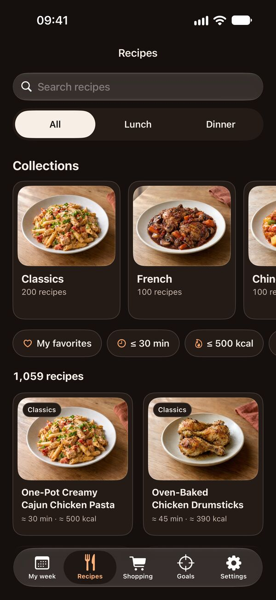
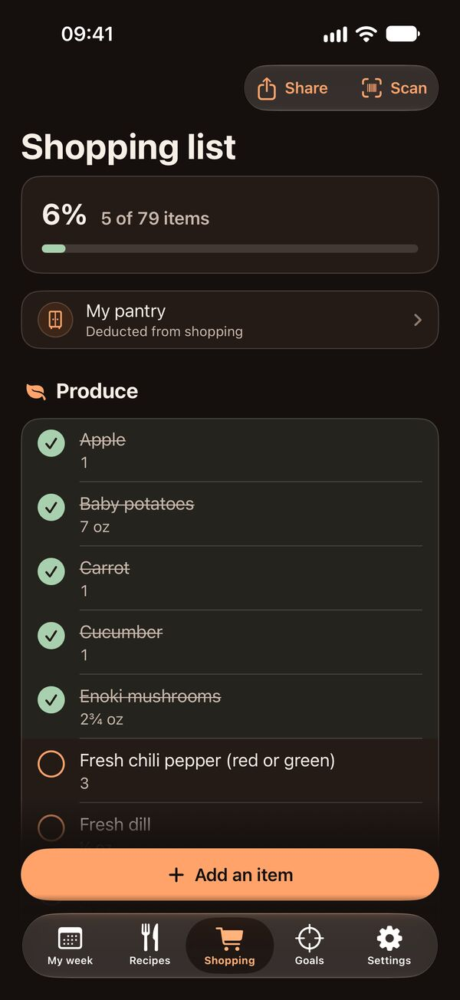
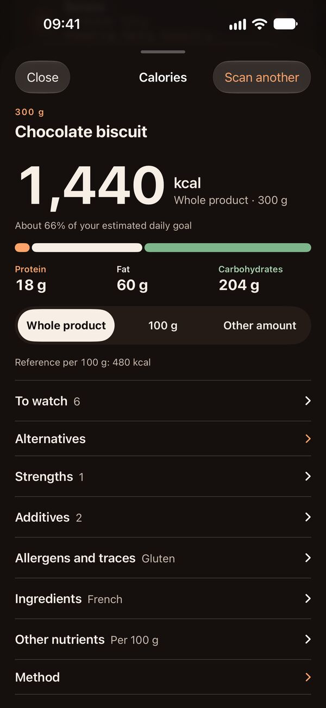
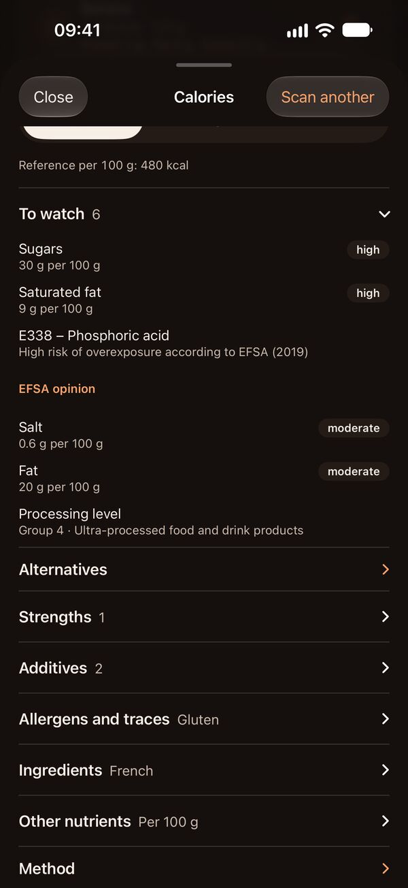
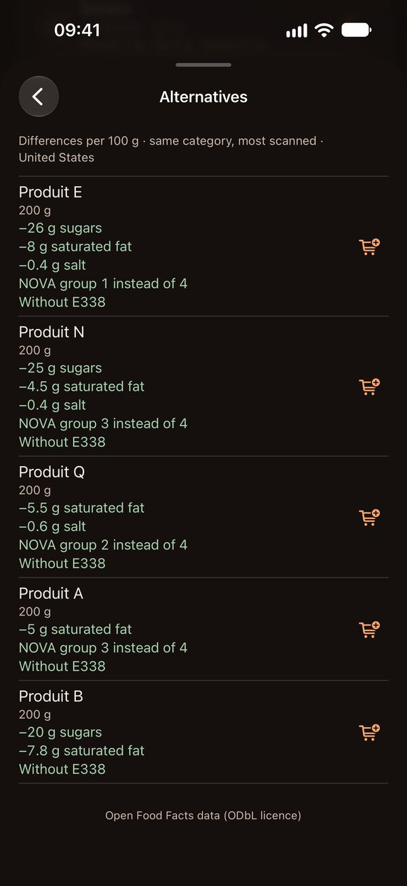
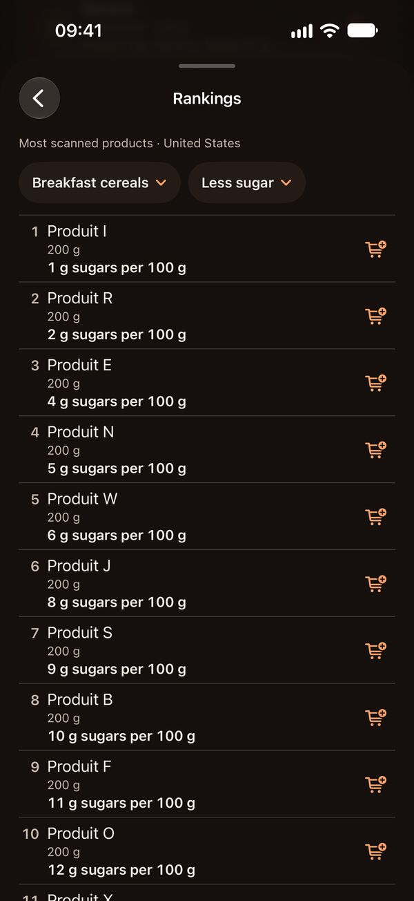
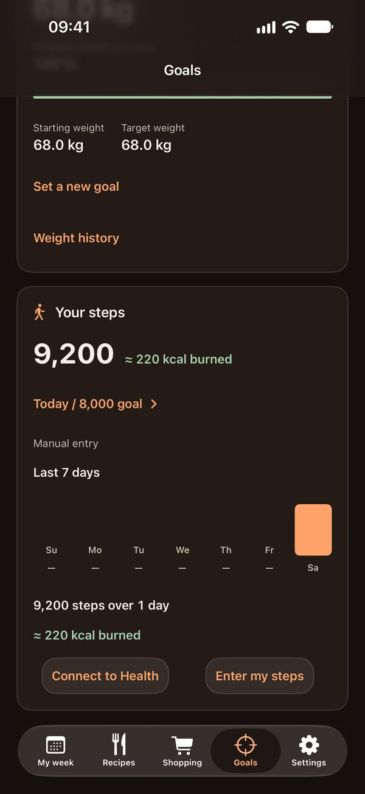
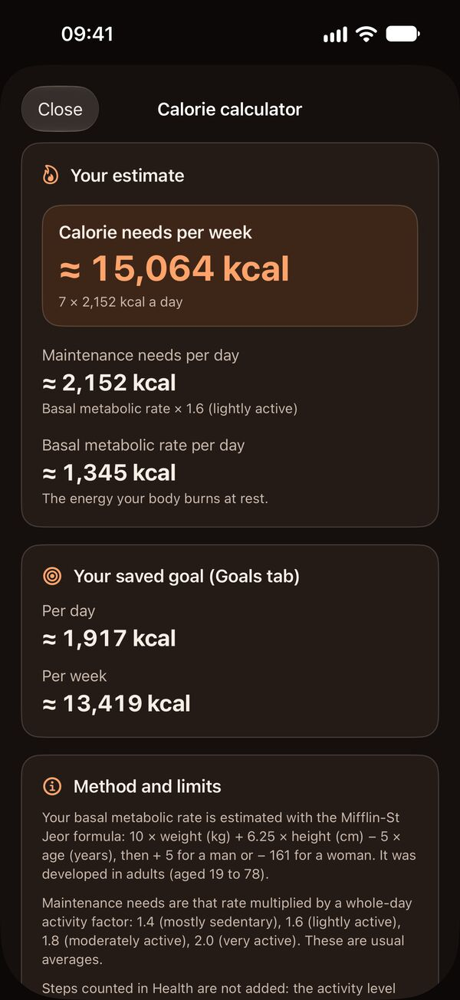
Yonsi 3.0 in one minute
Privacy Policy
Effective November 13, 2026 · applies to Yonsi (formerly TakeMyWeek, Dinner Ideas, CookCart and Weekbite) for iPhone, version 1.0 and later
What stays on your iPhone
Your meal plan, preferences (number of days, meals per day, servings, time limit, diet, excluded ingredients and allergens), pantry quantities, favorites and checked shopping items are saved in a file inside the app on your device. From version 2.1, the same file holds your Goals: the profile you enter (age, height, the sex used in the calorie formula, activity level, pace), your weight log and target, your chosen diet and the steps you enter by hand. From version 2.2, it also holds your answers to the “My needs” questions: your goals, household, meals, diet choice, allergens, cooking time, recipe collections and step goal. From version 2.3, it also holds the items you add to your shopping list by hand. From version 2.5, it also holds your daily log: for each item you add, its date, name and calories, and its quantity and macronutrients when the app has them. From version 2.6, entries keep their protein, carbs and fat whenever the app has them or you type them, and the same file also holds the shake products you save (10 at most): for each one, the name you give it, the scoop weight and its energy, protein, carbs and fat per scoop, as you copied them from the label. A shake you add is kept in the daily log like any other item: its name (product, number of scoops, liquid and volume), calories and macronutrients. Recently scanned products are kept in a separate local cache (at most 200 products, for 30 days). None of this leaves your iPhone unless you choose to share or export it.
Plate photos and the daily log (version 2.5 and later)
Plate photo analysis is an optional Premium feature (3 analyses are free) that runs entirely on your iPhone, with the artificial intelligence built into your iPhone. It needs a compatible iPhone running iOS 27 or later, with that feature turned on. The photo is read in memory to recognize the foods and estimate quantities and calories. Yonsi does not save the photo, does not add it to your photo library and does not send it to us or to anyone else: the analysis needs no internet connection, and if it is not available on your iPhone, the photo is not sent anywhere instead. Only what you choose to add to your daily log is kept, in the app’s file on your device, as described above; the app also keeps, in your iPhone’s keychain, how many free analyses you have used. That number is not part of your data: it is not included in the JSON backup you export, Reset data does not clear it, it is not synced with iCloud and is never sent, and it may remain on the device after the app is deleted, so that reinstalling the app does not give the free analyses back. If you take the photo with the camera, iOS asks for your permission first; you can withdraw it in Settings › Privacy & Security › Camera. The daily log is never used for advertising or marketing.
Macros and protein shake (version 2.6 and later)
Daily macronutrient totals and shakes are computed entirely on your iPhone, with no internet connection and no permission. The values used for water, semi-skimmed milk and unsweetened soy drink are built into the app; nothing is looked up online. Your shake products and your daily log are not sent to us or to anyone else and are never used for advertising or marketing. Deleting a shake product does not remove the shakes already added to your daily log; delete those entries in the log if you wish.
Calorie calculator (version 2.5 and later)
The calorie calculator runs entirely on your iPhone, with no internet connection and no permission. What you type in it (age, the sex used in the formula, height, weight, activity level and the health professional switch) is used for the calculation only: it is not saved, not added to the app’s file, to your Goals profile or to the JSON backup, and not sent to us or to anyone else. It may open filled in from the Goals profile you already entered, and changes made in the calculator never modify that profile. When you close it, what you typed is not kept.
Congratulations and encouragement (version 2.2 and later)
Messages are chosen on your iPhone from the data above, such as your steps or your saved week; nothing is sent. They appear only inside the app, never as notifications. A small separate file in the app lists which congratulations have already been shown and whether the “My needs” invitation was seen, so that none is repeated. It holds nothing else, is excluded from iCloud and device backups, is never included in exports and is erased by Settings › Reset data. Congratulations about weight appear only with an adult profile, above the healthy-weight threshold and at a gentle pace; no message ever praises eating less.
Weekly reminder (version 2.3 and later)
If you turn it on, Yonsi asks iOS for permission to send notifications and schedules one local notification a week, on the day and at the time you choose, to remind you to plan your week. It is scheduled on your iPhone: nothing is sent to us or to anyone else, and it contains no personal data. The day and time are kept in a small separate file in the app, excluded from iCloud and device backups and never included in exports. Turn it off in the app’s Settings › Weekly reminder, or in your iPhone’s Settings › Notifications › Yonsi.
Export to Reminders (version 2.3 and later)
When you tap Export to Reminders and allow access, Yonsi writes the items still to buy into a list named “Yonsi groceries” in Apple’s Reminders app. iOS asks for full access to Reminders; the app only creates that list and its items, and the next export replaces only the items it created itself, whose identifiers it keeps in a small separate file in the app (never exported). It does not read or change your other reminders. The list is then kept by the Reminders app under your Apple Account settings; if you share it, Apple syncs it through iCloud with the people you invite. You can turn access off in Settings › Privacy & Security › Reminders.
Apple Health (version 2.1 and later)
If you tap Connect to Health and allow it, Yonsi reads only your step count from Apple Health, read-only: it never writes anything to Health. The steps it reads are used to display your daily total and your step goal; they stay on your iPhone, are not saved in the app’s file, are not included in exports and are never sent to us or to anyone else. Health data is never used for advertising or marketing. You can stop access at any time in Settings › Privacy & Security › Health › Yonsi, or from the Health app. If you do not connect Health, you can still enter steps by hand. From version 3.0, the estimate of the calories burned by your steps is calculated on your iPhone from your steps and your profile (weight, height); nothing is written to Health or sent.
Barcode scanning and Open Food Facts (version 2.1 and later)
Barcode scanning is an optional Premium feature (free for 3 days from your first scan, from version 3.0) and the only feature of Yonsi that connects to a service other than Apple. When you scan or type a barcode, the app sends only that barcode to the Open Food Facts database (world.openfoodfacts.org) over HTTPS, to retrieve the product’s name, brand, quantity and nutrition facts and, from version 3.0, its processing group, additives, allergens and traces, and ingredient list. Version 3.0 asks for more product information but sends nothing more. From version 3.0, Rankings and Alternatives send the same service (world.openfoodfacts.org or, for Rankings when that address does not answer, search.openfoodfacts.org) one product category and one country (your iPhone’s region if it is in the app’s list, otherwise France), with no identifier, barcode or typed text; the lists received stay on your iPhone for 24 hours (kept up to 7 days to be shown offline) and are erased by Reset data. Product photos shown in Rankings and Alternatives are downloaded from Open Food Facts’ servers (images.openfoodfacts.org): they receive the request for each photo, which names the product shown, with no account and no identifier; photos are kept in memory while they are shown and are never saved on your iPhone. QR and Data Matrix codes are read on your iPhone: only the product code they contain is looked up, and the app never opens a web address found in a code. The request carries no account, no cookie and no identifier; like any internet request it reveals your device’s IP address, and it names the app and its version. Your meal plan, preferences, goals, weight and Health data are never sent. The camera image is used on your iPhone only to read the barcode; it is not recorded or sent. From version 3.0, the date of your first scan without a subscription, which starts the 3 free days, and, during those 3 days, the time the app was last used are kept in your iPhone’s keychain and never sent: Reset data does not restart them, and reinstalling the app does not either while this information is kept. Open Food Facts’ own privacy policy applies to its handling of requests. Product data comes from Open Food Facts contributors and is available under the Open Database License (ODbL). Product photos also come from Open Food Facts contributors and are published under the Creative Commons Attribution-ShareAlike 3.0 licence (CC BY-SA 3.0).
When data leaves your device — only because you asked
- Share / Export: when you share your plan, your shopping list or, from version 2.8, a recipe or a plate-photo result, or export a backup, iOS sends the content to the app or place you pick. A shared recipe text contains its name, time and calories per serving; a shared plate text, the estimated total and the macros, never the photo; from version 2.8, every shared text ends with Yonsi’s App Store link. A JSON backup contains your plan, preferences, favorites, pantry, from version 2.1 your Goals profile, diet, weight log and hand-entered steps, from version 2.2 your “My needs” answers, from version 2.3 the items you added to your shopping list, from version 2.5 your daily log, and from version 2.6 your shake products. It never contains the steps read from Apple Health. Backups are not encrypted by Yonsi: keep them somewhere safe.
- iCloud / device backups: like other app data, the app’s file may be included in your iPhone’s backups under your Apple Account settings.
- Barcode scan: only the barcode, as described above.
- Export to Reminders: the items still to buy, written to a list in Apple’s Reminders app, as described above.
- Links: a link you tap in the app opens in your browser or the App Store, where that website’s own privacy policy applies.
Purchases and subscriptions
Yonsi Premium is bought through Apple’s App Store. Apple processes the payment and manages the subscription under its own privacy policy. We never receive your name, your Apple Account or your payment details. The app only asks Apple’s purchase system on your iPhone whether a subscription is active. For the welcome offer (version 2.1 and later), the app stores in your iPhone’s keychain the time of its first opening and whether the offer applies to this installation. This item stays on this device, is not synced with iCloud and is never sent; it may remain on the device after the app is deleted, so that the 48-hour window is not restarted by reinstalling.
Network
The recipe catalog is built into the app, and the app sends nothing to us. It contacts the App Store to show the subscription offers and to check or restore a purchase, and, only when you use the barcode scan, Open Food Facts as described above. Everything else works offline, including plate photo analysis, which runs on your iPhone.
Children
Yonsi collects no information from anyone, including children. The app can be used from age 7. For anyone under 18 it never suggests a weight-loss goal or a calorie deficit: the calculator shows only estimated maintenance needs.
Health information
Calories, macronutrients, diet labels, calorie targets and step goals are estimates and general information, not medical or dietary advice. Calories estimated from a photo of a plate are approximate and can be far from the real value: the analysis can misjudge dishes and portions and often cannot see oil, butter, cream or sauces, so check the result and add what is missing. Daily macronutrient totals add up the values of your entries, and a shake is computed from the label values you entered and average values for the liquid: they are estimates too. The calorie target uses a published formula with safeguards (minimum daily intake, gentle or moderate pace, no weight-gain goal); it cannot predict your results. The calorie calculator also uses a published formula (Mifflin-St Jeor, with activity factors): its figures are estimates that vary from person to person. If you are pregnant or breastfeeding, have a medical condition, or have or had an eating disorder, talk to a health professional before changing your diet; if you tell the app so in your profile, it does not calculate a calorie deficit. Diet and allergen filters are based on ingredient labels in our catalog: always check product packaging for allergens and cross-contamination.
Deleting your data
Data stays on your iPhone until you replace it or delete the app. Settings › Reset data clears the active data (plan, preferences, favorites, pantry, shopping checks, Goals, “My needs” answers, the daily log (from version 2.5), the shake products (from version 2.6), the list of congratulations already shown, the scanned-product cache and, from version 2.3, the weekly reminder with its scheduled notification and the record of exported items) but keeps a local recovery copy on the device (one is created each time you reset or import a backup; from version 2.9, the app keeps only the 2 most recent); delete the app (rather than offloading it) to remove everything stored by the app. The welcome-offer item, the free-analysis counter and the free-scan dates in the keychain may remain on the device, as explained above. Steps stay in the Health app, which you control. Items already exported to the Reminders app stay there until you delete them in Reminders. Exported backup files are yours to delete separately. Because we hold nothing on any server, there is nothing to request from us.
Changes and contact
If this policy changes, the new version will be posted on this page with a new effective date. Questions: see the contact address below.
Terms of Use
Effective November 13, 2026
Yonsi is licensed under Apple’s standard Licensed Application End User License Agreement.
Yonsi Premium
- Premium is an auto-renewable subscription, offered weekly (with a 3-day free trial for eligible new subscribers, when available), monthly, for 3 months or yearly. From version 2.4, the yearly plan no longer includes a free trial. Prices are shown in the app before you buy and depend on your country; if you already subscribe, your current plan and price stay as they are unless you change them.
- Payment is charged to your Apple Account when you confirm the purchase. The subscription renews automatically unless it is cancelled at least 24 hours before the end of the current period.
- You can manage or cancel your subscription at any time in your App Store account settings. Deleting the app does not cancel a subscription.
Welcome offer (version 2.1 and later)
- On a new installation of version 2.1 or later, the Goals tab (and, from version 2.3, the top of the offer screen) may show a welcome offer for 48 hours after the app is first opened on that iPhone. It is not shown on an iPhone that already had Yonsi data, and it disappears when the 48 hours are over or if you already subscribe.
- It is a yearly subscription whose first year is paid upfront, in a single payment, at a reduced introductory price; it then renews at the regular yearly price shown before purchase, unless you cancel at least 24 hours before the end of the first year.
- Apple decides eligibility: an introductory offer can be used once per subscription group, so it may be unavailable if you already used a free trial or another introductory offer of Yonsi Premium.
Recipes and nutrition
Cooking times, calories and macronutrients are estimates computed from the ingredients; they are not medical or dietary advice. Recipes have not all been tested in a kitchen. Recipe pictures are illustrations. Always check packaging for allergens.
Goals, steps and product data
Goals, calorie targets, step goals and the calorie calculator’s results are general estimates and do not replace advice from a health professional. Product information from the barcode scan comes from the open, collaborative Open Food Facts database (ODbL); it may be incomplete or out of date: check the packaging.
Plate photos and the daily log (version 2.5 and later)
Plate photo analysis is part of Premium: the first 3 analyses are free, and later ones need an active Premium subscription. It needs an iPhone compatible with built-in artificial intelligence, running iOS 27 or later; where it is not available, the app says so and everything else works as before. Calories estimated from a photo are produced on your iPhone by an automatic model: they are rough estimates that can be wrong or far from the real value, and they are not medical or dietary advice. Your daily log is a personal record kept on your device.
Barcode scanning is part of Premium. From version 3.0, it is free for 3 days (72 hours) from your first scan without a subscription; during those days the scanner’s first screen shows the time left, then the scan shows the offer screen. Check off item and Add to pantry stay in Premium during the 3 days. Subscribers see no change. This rule is built into the app and does not depend on any remote setting.
Health and nutrition: what you should know
Yonsi helps you organize your meals and follow reference figures. Its numbers are estimates, not measurements, and nothing in the app is medical or dietary advice. If in doubt, ask a health professional before changing how you eat.
- Estimates. Recipe calories are computed from the ingredients; those of the daily journal, the shaker and the scan from the declared values (per 100 g or 100 ml), your label and average values. Recipe times are indicative, cooking times don’t scale with servings, and not every recipe has been kitchen-tested yet.
- Plate photo. The analysis estimates foods and amounts from a single photo: the real value can differ a lot. Check each food and quantity, and correct what looks off.
- Allergens and labels. Recipe filters and diets do not guarantee the absence of allergens or traces: “gluten-free” means no declared gluten allergen, and “no added sugar” does not mean sugar-free. Scan information comes from a collaborative database and the declared label; it may contain errors. Always check the label of every package and cross-contact risks. Recipes and filters are not a medical diet or a validated nutrition plan.
- Pregnancy, breastfeeding, a medical condition, an eating disorder. In these situations, ask a health professional, who can help you set a suitable reference.
- Safeguards (adults). From age 18, if the weight entered is below the app’s safety threshold for your height (in the calculator: a body mass index below 18.5), maintenance needs are still shown but no deficit is suggested; beyond the safeguards, meal adaptation is turned off. The calorie target never goes below 1,200 kcal for women and 1,500 kcal for men: that minimum is neither a maintenance reference nor a weight-loss plan, and it does not guarantee that a deficit is suitable for you. In these cases, advice from a health professional is recommended.
- Children and teenagers. The app can be used from age 7. For anyone under 18 it never suggests a weight-loss goal or a calorie deficit: only an estimate of maintenance needs. The calculator’s formula was established in adults (aged 19 to 78): for a child, the figure is even more approximate. For any question about a child’s or teenager’s weight or diet, see a health professional.
- Step calories. This is an estimate (walking on flat ground at an ordinary pace); it is shown but never added to your calorie goal.
Support
We read every message and usually answer within a few days.
Calories, allergens, special situations, children: see Health and nutrition: what you should know.
balustreyonni@gmail.com
- How does the plate photo work?
- Take a photo of your plate: the artificial intelligence built into your iPhone recognizes the foods and estimates quantities and calories, on the device. Add the result to your daily log. 3 analyses are free; after that, plate photo analysis is part of Premium. The photo is never saved or sent. The result is a rough estimate: it can misjudge dishes and portions, and oil, butter, cream and sauces are often invisible in a photo, so check every food and quantity and add what is missing with Add a food.
- The plate photo is not available on my iPhone.
- It needs an iPhone compatible with built-in artificial intelligence, running iOS 27 or later, with that feature turned on in Settings and its model downloaded (if it is still being prepared, try again later). On other iPhones the app tells you the feature is not available and everything else works as before. The photo is never sent to a server instead.
- Why can the calories from a photo be wrong?
- The analysis guesses the foods and their quantities from a single photo. It cannot weigh anything and often cannot see what is hidden in a dish: oil, butter, cream, sauces. It can also name a food wrongly or suggest a quantity that is too high or too low. Yonsi therefore shows no calorie range, which would suggest a precision the analysis does not have: under the total, a line says “Rough estimate: the real value can differ a lot.” A note under the list of foods reminds you that oil, butter, cream and sauces are often invisible in a photo: add them with Add a food (they are in the food list). Under a food, “Uncertain estimate. Please check or correct it.” means that the analysis reported low confidence, or that the food is not in the app’s own food list, so its calories are the analysis’s estimate, kept within a plausible range for its category: check or correct it. A line without that mark is not necessarily right. If a message says a quantity was reduced, it was lowered to stay within the app’s limits: check it. The note that the list is limited to the most visible foods appears only when the list was cut to 8 foods (rare: the analysis returns at most 8 foods). When the list is full (8 foods), a note says to remove one to add another.
- What changed in version 3.0?
- The app has a new dark design everywhere, with the same tabs. The scan shows values for the whole product, also reads QR codes that carry a product code and, when available, lists additives, allergens and traces, ingredients and processing level. Two lists, “To watch” and “Strengths”, sum up the nutrients, with their thresholds and sources under “Method”. “Alternatives” and “Rankings” compare products of the same category. In Goals, the “Your steps” card estimates the calories burned by your steps. Your personal data stays on your iPhone. The app is also simpler: in My week, Lock and Replace sit on the large dish at the top; in Shopping, Share (at the top) holds Share list as text and Export to Reminders; Settings › Meal preferences holds Collections for my week, Calorie limit per serving and Diet; Settings › Allergens and exclusions opens the allergens directly; in Goals, Scan a food is one of the Daily journal entries and the calorie calculator, your diet and your needs are rows; the offer screen lists every Premium feature at once. The barcode scan is free for 3 days from your first scan, then part of Premium.
- What changed in version 2.9?
- The interface is sharper and more tactile: raised cards and buttons that respond to your touch, with haptic feedback where it matters. In My week, the photo of the dish shows as soon as you open the app. A “Cook once, eat twice” dinner recipe lists its ingredients for every serving to cook. The egg allergen is flagged for lo mein noodles, and servings are revised for three very hearty recipes. In Settings, the reset confirmation lists everything that is erased and the app now keeps only the 2 most recent recovery copies; if Reminders access is denied, a link opens Settings. Unit plurals and very large text sizes are fixed. Your data still stays on your iPhone.
- What changed in version 2.6?
- Protein, carbs and fat are counted for every entry of your daily log and shown next to today’s calories, with each one’s share; you can save your protein powder and add a shake in one tap; the app has a new look in relief and a new icon; recipe search, long-press menus, swipes and sheets make it easier to use; larger text sizes work on more screens and Reduce Motion is respected everywhere. Your data still stays on your iPhone.
- How do I add a protein shake?
- In Goals, in the Daily journal, tap Add a shake. The first time, tap Save a product and copy the values per scoop from the label: product name, scoop weight, energy, protein, carbs and fat (the app suggests no default values, and you can save up to 10 products). Then choose the product, the number of scoops (half scoops included), the liquid (water, semi-skimmed milk or unsweetened soy drink) and its volume: the shake goes to today’s journal with its calories and macros. If the app refuses the values, check the label: protein, carbs and fat together cannot weigh more than the scoop, and the energy must match its weight.
- Why are today’s macros marked as partial?
- At least one entry of the day has no protein, carbs or fat, for example an entry added with an earlier version, or a manual entry where you only typed the calories. The known values are added up and the app tells you how many entries are missing theirs; it never counts them as 0 silently. The percentages are each one’s share of the energy from the three.
- Why does the manual entry refuse my macros?
- Protein, carbs and fat are optional in a manual entry. When the energy they provide (4 kcal per gram of protein or carbs, 9 per gram of fat) is well above the calories you typed, the app shows the energy they provide and asks you to check the numbers: it is usually a typing mistake.
- What changed in version 2.5.1?
- Version 2.5.1 changes the plate photo result and fixes a few screens. The calorie calculation is unchanged. Plate photo: the calorie range is replaced by a rough-estimate line without figures; a reminder about oil, butter, cream and sauces appears under the list of foods; a separate message appears when a quantity was reduced; the “Uncertain estimate” mark also appears for foods that are not in the app’s food list; and for such a food, protein, fat and carbs no longer add up to more than 100 g per 100 g (calories are unchanged). Screens: in the barcode scan, in the manual journal entry and when you enter your weight (“Continue” in “Your goal”, “Next step” in the setup questions), fields and buttons stay reachable above the keyboard, and the “One of these situations applies to me” switch (calculator and Goals) also responds when you tap its label.
- Where is my daily log kept?
- On your iPhone only, in the app’s file with the rest of your data, together with your shake products (version 2.6). Both are part of a JSON backup if you export one, and Settings › Reset data clears them.
- How do I change my needs and goals?
- Go to Settings › My needs and goals: the questions open filled in with your current answers and settings. Saving updates your settings and goals; your saved week stays as it is until you prepare a new one. Changing the number of servings is part of Premium, as in the week’s preferences.
- What happens if I close the offer screen?
- Nothing is charged. From version 2.4 the offer screen opens once, right after your free first week; close it with the cross to continue with limited access: you keep your saved week, its recipes and your shopping list, and you can open the offers again from Settings › Subscription.
- Do the congratulations send notifications?
- No. They appear only inside the app, for a few seconds or until you tap them, and each one is shown once. The only notification Yonsi can send is the optional weekly reminder (version 2.3), if you turn it on.
- How do I share the shopping list with my household?
- In Shopping, tap Share (at the top), then Export to Reminders: the items still to buy go to a “Yonsi groceries” list in the Reminders app. Share that list from Reminders, and everyone sees the ticks. Exporting again replaces the items Yonsi added before. From the same Share button you can also share the list as text, sorted by aisle, and add your own items with Add an item. If you declined access to Reminders, from version 2.9 the app shows a link to Settings so you can allow it.
- What is in what I share?
- My week: the week’s meals (day, lunch or dinner, recipe, servings). Shopping list: the items still to buy, sorted by aisle, including the ones you added yourself. Recipe (version 2.8 and later): the name, time and calories per serving, never the ingredients or the steps. Plate photo (version 2.8 and later): the estimated total and the macros; the photo is never shared. From version 2.8, each text ends with Yonsi’s App Store link. The app sends nothing itself: you choose where it goes in the iOS share sheet.
- What is “Cook once, eat twice”?
- In your week’s preferences, with lunches and dinners, turn on Cook once, eat twice: each dinner becomes the next day’s lunch. The dinner card tells you how many servings to cook; the shopping list counts them once. You can still swap a leftover lunch for another lunch. From version 2.9, that dinner’s recipe page, opened from My week, Recipes or Goals, lists its ingredients for every serving to cook and says so above the list: nothing to work out.
- "Not enough compatible recipes" — why?
- Your filters (time limit, diet, excluded ingredients or allergens) leave fewer recipes than meals in your week. The app tells you whether lunches or dinners are missing and never loosens your filters on its own: raise the time limit, choose 5 days instead of 7, plan dinners only, or remove an exclusion. When it sets things up from your needs, it only adjusts what it chose for you (such as the diet or the cooking time) and says so in the summary; your allergens, a diet you picked and your collections are never changed.
- How do I plan lunches as well as dinners?
- In your week’s preferences, choose lunches and dinners. Your week then has a Lunch tab and a Dinner tab; locked meals stay as they are when you generate again.
- How do I keep a meal and reshuffle the rest?
- Tap Lock on the meals you want to keep, then generate your week again. Use Replace to swap a single meal.
- How do Goals work?
- Open the Goals tab, enter your profile, your current and target weight and your pace. The app estimates a daily calorie target with safeguards and lets you choose one of ten diets for your next meals. Your current week stays as it is until you generate again.
- How does the calorie calculator work?
- Open the Goals tab and tap the Calorie calculator card, below the Daily journal. Enter your age, the sex used in the formula, your height in cm, your weight in kg and your activity level: it shows an estimate of your basal metabolic rate (the energy your body uses at rest) and of the calories to maintain your weight per day, then per week (7 times the daily figure). It is free; under 18 it shows maintenance needs only, never a deficit. It uses the Mifflin-St Jeor formula and activity factors from 1.4 to 2.0; the real figure varies from person to person, so treat it as an estimate, not medical advice. If you are pregnant or breastfeeding, have an eating disorder or a medical condition, turn on the health professional switch: no number is shown, and a health professional is the right person to ask.
- Is what I type in the calorie calculator saved?
- No. It stays on your iPhone, is not saved, is not part of the JSON backup and is never sent. It may open filled in from your Goals profile, which the calculator never changes. If you have saved a weight goal in Goals, the calculator also shows that goal as saved there.
- How do I connect or disconnect my steps?
- In Goals, tap Connect to Health and allow reading the step count. To stop, go to Settings › Privacy & Security › Health › Yonsi, or use the Health app. If there is no data or access is off, you can enter steps by hand.
- The barcode scan does not find my product.
- The scan needs an internet connection; from version 3.0 it is free for 3 days from your first scan, then needs a Yonsi Premium subscription. If a product is not in Open Food Facts, check the barcode or try another product; you can also type the barcode digits.
- The barcode scan found a different product.
- Tap “Not the right product?” to go back to barcode entry, scan again or correct the digits. If the code is right, the product data may be incomplete or wrong in Open Food Facts: rely on the package.
- Why does the scan show values for the whole product?
- From version 3.0, when the product’s quantity is known (for example 300 g), Yonsi calculates the values for the whole product. Values per 100 g or 100 ml stay on one line as a reference. You can pick another serving (the one stated on the product, 100 g or 100 ml). If the quantity is missing, or not in the unit of the nutrition facts, the app says so and shows values per 100 g or 100 ml: enter the quantity printed on the package to get the total.
- What does the product information mean?
- It comes from Open Food Facts and only shows when it is available there. The NOVA group (1 to 4) ranks how processed a food is, not its nutritional quality. Additives are those found in the ingredient list, with their E number, name and function (preservative, color…): the function is their role in the recipe, not a health assessment, and Yonsi gives no rating to additives or products. From version 3.0, only additives for which the European Food Safety Authority (EFSA) has published an exposure assessment carry a line that cites it, with a link to its opinion. If the ingredient list is incomplete, the app says “not determined” or “not provided”, never “none”. Always check allergens on the package. A product saved offline has no such details: scan it again once online.
- Does the scan read QR codes?
- Yes, from version 3.0, when the QR code or Data Matrix code carries a product code (GS1 standard). A QR code without a product code, an advertising one for example, shows “This QR code holds no product code: scan the barcode instead.”; the app never opens the address it contains.
- What do “To watch” and “Strengths” mean?
- They are two collapsed lists under the product values. The low, moderate or high levels of sugars, salt, saturated fat and fat are those published by Open Food Facts, per 100 g or 100 ml; fibre, protein and low energy follow the nutrition-claim thresholds of EU Regulation (EC) No 1924/2006; processing is the NOVA group. The “Method” screen, at the bottom of the result, gives each threshold and its source. This is information, not a score or medical advice.
- How are alternatives and rankings chosen?
- “Alternatives” offers up to 5 products of the same category, among the most scanned in your country, that do better on at least one “to watch” point of the scanned product and no worse elsewhere; each line gives the difference in figures (for example “−20 g sugars per 100 g”). If there is none, the app says so. “Rankings”, on the scanner’s first screen, sorts up to 20 products of a category by one criterion: less sugar, salt or saturated fat, more protein or fibre, less processed. These lists need a connection and the Premium subscription; if the database does not answer, tap “Try again”.
- How are the calories burned by my steps estimated?
- From version 3.0, the “Your steps” card in Goals shows “≈ … kcal burned” for today and for the last 7 days. The estimate uses your steps, your height (for step length) and your weight: 0.5 kcal per kg per km walked, above resting energy (American College of Sports Medicine walking equation), rounded to the nearest ten. It only appears when your Goals profile is filled in and is not added to your calorie goal, which already accounts for your activity level.
- I do not see the welcome offer.
- It appears in the Goals tab and, from version 2.3, at the top of the offer screen, only on a new installation of version 2.1 or later, during the 48 hours after the first opening, if Apple confirms that your account is eligible and you are not already subscribed. From version 2.9, it is a single line in Goals: tap it to open the offer screen.
- Why does the shopping list say 1 avocado when the recipe uses half?
- The list rounds whole items up so you buy what you need; recipe pages show exact amounts for your servings.
- Can I use metric units?
- Yes: choose metric or US units in Settings, in any of the 10 languages.
- How do I manage, cancel or restore my subscription?
- Manage or cancel it in the Settings app of your iPhone: tap your name, then Subscriptions. On a new device, open Yonsi, go to Settings › Subscription and tap Restore purchases.
- How do I redeem an offer code?
- From version 2.8, open Settings › Subscription › Redeem a code. Apple’s sheet opens: enter the code and confirm. Premium turns on as soon as the App Store accepts the code. Yonsi never reads or keeps the code.
- What can I do without a subscription?
- You can browse the recipe collections, keep reading your saved week, its recipes and your shopping list, add your own items to the list, share it or export it to Reminders, use Goals, the calorie calculator and steps, and try plate photo analysis 3 times. Generating or changing a week, opening other recipes, advanced filters, the pantry, the barcode scan and further plate photo analyses are part of Premium.
- How do I move my data to a new iPhone?
- Settings › Export JSON backup creates a backup file; open it with Settings › Import JSON backup on the new device. Your daily log and, from version 2.6, your shake products are in the backup. Steps from Apple Health are not in the backup: connect Health again on the new iPhone.
En français
Présentation, politique de confidentialité, conditions d’utilisation et assistance : version française du site. Accès direct à la politique de confidentialité.